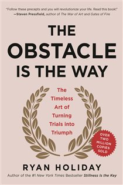

Library › Self-Improvement
The Obstacle Is the Way — Summary & Key Lessons

The timeless art of turning trials into triumph — Marcus Aurelius' insight, weaponized for modern obstacles.
📖 OPEN THE FULL INTERACTIVE BREAKDOWN →🌐 Read it in Hindi, Hinglish, Gujarati, Tamil & 22 more languages — free, with audio.
💡 The Big Idea
Built on one line from Marcus Aurelius, Holiday's modern-Stoic manual argues that great individuals aren't spared obstacles — they metabolize them: every barrier contains the raw material of its own solution, and history's giants (Rockefeller in panics, Edison at his burning factory, Lincoln in depression) advanced BECAUSE of what blocked them, not despite it. The method has three disciplines: PERCEPTION (see events plainly, strip the story, find the opportunity inside), ACTION (directed energy, persistence, iteration — practicing the process over the prize), and WILL (the inner fortress for what can't be changed: acceptance, amor fati, premeditatio malorum). The obstacle in the path doesn't block the path. It IS the path.
🧠 The 6 Key Lessons
Lesson 1: Perception: Strip the Story From the Event
Part 1: The Discipline of Perception
Between every event and your response sits an interpretation — and the interpretation, not the event, is usually the obstacle. The discipline: steady your nerves (panic is a decision), control emotions (ask: does this feeling help me act?), practice objectivity (describe the situation as a telegram — facts only, no adjectives — and watch half the catastrophe evaporate), reframe perspective (zoom out in time and scale), and ruthlessly separate what's in your control from what isn't, spending yourself only on the former. The crowning move: train yourself to see the opportunity INSIDE every obstacle — the difficult client teaching negotiation, the failed launch exposing the market truth early, the injury forcing development of the weaker side. Nothing is good or bad without our verdict; withhold the verdict, and events become material.
📖 Example: John D. Rockefeller's education was panic: entering work amid the 1857 crash, he trained himself to read disasters coldly while others fled — and each subsequent panic (1873, 1893, 1907) became his buying opportunity, funding the acquisitions that built… Read the full example →
⚡ Do this: Take your current worst situation and write the telegram version: facts only, no adjectives, no forecast. Then complete two sentences: 'What this makes possible is ___' and 'What remains in my control is ___.' Act on the second list only.
Lesson 2: Action: Directed Energy, Relentless Iteration
Part 2: The Discipline of Action
Perception without movement is philosophy as sedative. The action discipline: get moving (momentum before perfection — while others deliberate, start; genius is often just audacity plus initiative), practice persistence (the answer to a locked door is the window, the crowbar, the years — Edison's 10,000 'ways that won't work'), FOLLOW THE PROCESS (break the overwhelming into the immediate: don't win the championship, win this drill, this play — the process absorbs pressure that the prize inflates), do every job right (how you do anything is how you do everything — the unglamorous task done excellently IS the character), and use the flank: when the frontal assault fails, attack obliquely — turn weakness into leverage, use opponents' strength against them, find the line of least expectation. Action isn't reckless motion; it's deliberate, persistent, adaptive pressure applied where it counts.
📖 Example: Demosthenes — sickly, stammering, robbed of his inheritance by guardians — built underground practice rooms, shaved half his head so he couldn't go out, spoke over waves with pebbles in his mouth, and became Greece's greatest orator; then sued his guardians… Read the full example →
⚡ Do this: Choose the obstacle you've been analyzing to death and take one physical action on it within the hour — imperfect, small, real. Then write your process card: the daily unit of work that, repeated, dissolves this obstacle — and judge yourself only on units completed.
Lesson 3: Will: The Inner Fortress
Part 3: The Discipline of the Will
Some things cannot be perceived away or acted upon — the diagnosis, the loss, the market, mortality. Will is the third discipline: the strength not to overcome the unchangeable but to endure and transmute it. Its practices: build your INNER CITADEL in advance (train difficulty voluntarily — physical hardship, discomfort rehearsal — so crisis meets a prepared self), PREMEDITATIO MALORUM (rehearse what could go wrong before every venture: the premortem that makes failure survivable and half-expected), AMOR FATI (beyond accepting fate — loving it: treating everything that happens as fuel, the Nietzschean upgrade to Stoic acceptance), persistence's big brother PERSEVERANCE (persistence attacks a problem; perseverance outlasts a life of them), and something bigger than yourself (service dissolves self-pity — helping others is the fastest exit from your own despair). And memento mori above all: death, honestly held, prices every lesser obstacle correctly.
📖 Example: Thomas Edison, 67, watching his life's work burn — machine shops, records, prototypes — told his son: 'Go get your mother and all her friends. They'll never see a fire like this again.' Within three weeks, partial operations resumed; within a year, revenue… Read the full example →
⚡ Do this: Run a premortem on your next big venture: write the three most likely failure modes and your response to each. Add one voluntary hardship weekly (cold, fast, hard training, digital silence) — the citadel is built in peacetime. And reframe one current unchangeable with the amor fati sentence: 'This is fuel because ___.'
Lesson 4: The Flip: Every Obstacle Inverts
Throughout: The Central Mechanism
The book's repeatable mechanic — the FLIP — works like this: identify the obstacle's exact nature, and you'll find its inversion is a gift with the same shape. Blocked opportunity → forced innovation (constraints breed the creative solution comfort never demands). Hostile opponent → free instruction (enemies show you your weaknesses at no charge; rivals keep you sharp). Slow progress → deep mastery (the shortcut denied is the fundamentals learned). Public failure → accelerated humility and freedom (reputation lost is audience-pressure lifted). Even injustice inverts: mistreatment is the chance to model equanimity, which converts witnesses into allies. The skill is asking, of every setback, the engineer's question: 'what does this MAKE POSSIBLE that wasn't possible before?' Some benefit exists in every disaster — but only for those trained to look while others mourn.
📖 Example: Holiday's gallery of flips: Amelia Earhart accepting a humiliating offer (fly across the Atlantic as a passenger while men piloted, described dismissively by the sponsors) — and using the fame it generated to fund the solo flights that made history; the… Read the full example →
⚡ Do this: Build your flip inventory: list your three active obstacles, and for each, force-write the same-shaped gift ('this blocks X, which forces me to develop Y'). Pick the strongest flip and act on the Y this week — the obstacle has already paid its tuition; collect it.
Lesson 5: The Trained Mind: Practice the Obstacle Before It Arrives
Part 2: The Discipline of Action
Stoic training is like firefighting drill: you rehearse responses to emergencies in calm times so the body and mind execute them automatically under pressure. Marcus Aurelius ran 'premeditatio malorum' — imagining losses, betrayals and disasters before they happened, not to be gloomy but to be ready. When the obstacle actually arrives, the trained mind doesn't panic; it recognizes a drill it has already run a hundred times. Untrained minds react; trained minds respond. The obstacle is way easier when you have already walked through it in your imagination, because the fear — not the event — is what usually defeats people.
📖 Example: Holiday describes how elite athletes visualize the hardest race conditions before the event — the rain, the cramps, the rival's surge — so that on race day, nothing feels new. The obstacle that shocks everyone else is just the drill they rehearsed. Read the full example →
⚡ Do this: Pick the obstacle you fear most (a hard conversation, a project failure, a health scare) and write a 10-line rehearsal of exactly how you will handle it. Run it once daily for a week.
Lesson 6: The Obstacle in Others: Turn Critics and Foes Into Teachers
Part 3: The Obstacle of Other People
The most annoying obstacles come from other people — the critic, the rival, the unfair boss. Stoicism offers a two-step move: first, ask what is actually in your control (your effort, your response — not their opinion); second, treat the adversary as free information. The critic reveals your weak points; the rival exposes your complacency; the unfair boss trains your patience under pressure. None of this requires liking them. It only requires extracting value from their friction. The enemy, used well, is a gym membership you never have to pay for.
📖 Example: Holiday recounts how Cato was attacked constantly in the Roman senate — and used every attack as a prompt to examine his own conduct for real faults, fixing what was true and ignoring what wasn't. His enemies made him more disciplined than his friends ever… Read the full example →
⚡ Do this: Identify your harshest critic. List one piece of truth in their criticism, and act on it this week — gratitude to your enemy is the Stoic flex.
✅ 5-Step Action Plan
- Telegram-test your worst situation: facts, possibility, control.
- One physical action within the hour; process units over prizes.
- Premortem the next venture; schedule weekly voluntary hardship.
- Write the amor fati sentence for one unchangeable.
- Keep the flip inventory: every obstacle's same-shaped gift, collected.
⚠️ When This Doesn't Work
Holiday's 'the obstacle is the way' is the most motivating Stoic mantra — and the Concorde proves its limit. Every obstacle on that project was overcome brilliantly: politics, engineering, budget, noise, cost — each barrier turned into fuel, for thirty years, until the entire project was revealed as an economic catastrophe that should have been killed decades earlier. Some obstacles are not the way; they are the signal that the way is wrong. The Stoic test is harder than the book admits: know which wall to break and which to walk away from.
💀 The Graveyard Proves It
✈️ The Concorde — The Plane So Beautiful Nobody Could Stop Paying. Burn: £1.3B+ (never recovered). Read the full case study →
💬 Best Quotes from The Obstacle Is the Way
- “The impediment to action advances action. What stands in the way becomes the way.”
- “There is no good or bad without us, there is only perception.”
- “Amor fati — not just to bear what is necessary, but to love it.”
Interactive version: mark lessons as read, listen in your language, share quote cards.